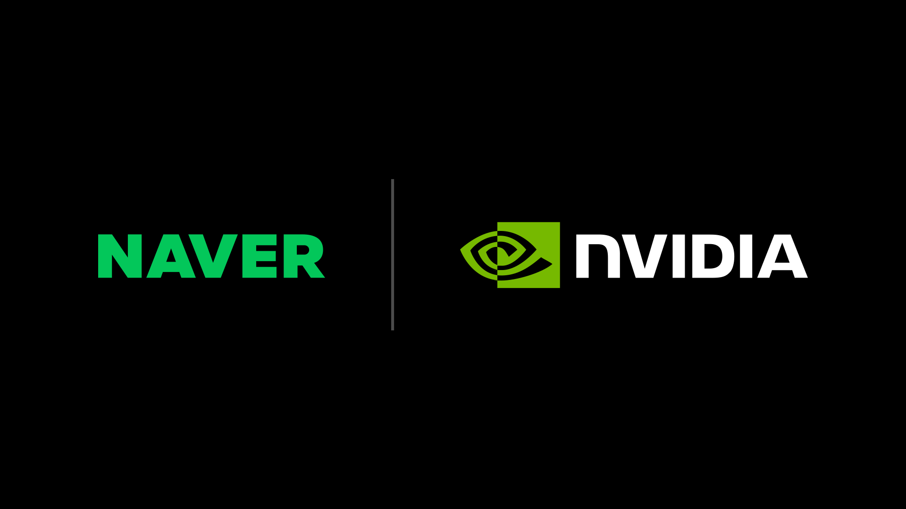
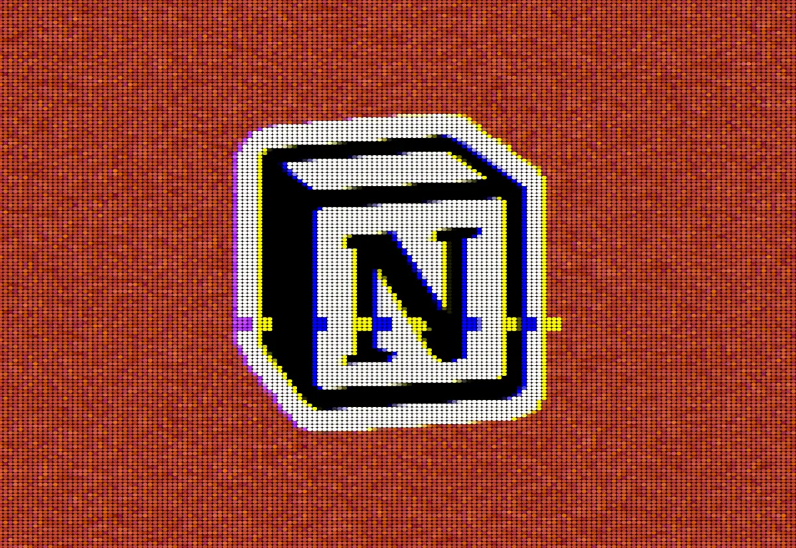
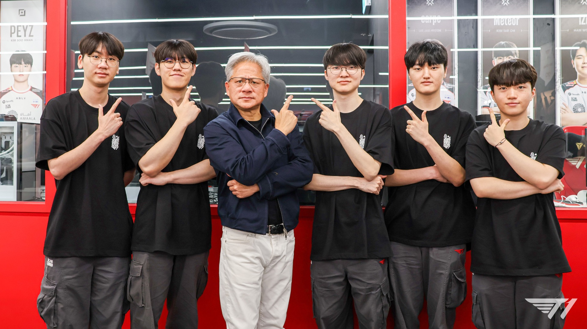
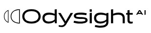

中国创作者视角 • 全球AI前沿 • 每日晨报
Janet's Express Box
2026-06-08 // VOL_251
2026-06-08 // VOL_251
Agent 接管运营
AI 开始从聊天框走进物业、工厂、算力和办公系统。
Janet 早。这个周末没有一条“炸场”的单点模型新闻，但信号很密：AI 正从聊天框、演示台和发布会，继续往物业运营、国家级算力、制造工厂、机器人和办公软件里钻。今天这份报纸的关键词不是炫技，是接管运营。
📌 今日趋势：Agent 开始接管运营
今天共同主线很清楚：NVIDIA 在韩国连续把 AI factory、内存、主权云、机器人和本地 PC AI 串起来，Entrata 又把 OpenAI 接进物业管理，Notion 的 Anthropic 短故障则提醒所有人，AI 已经变成真实办公流程里的依赖项。AI 不再只是生成答案，而是在接管业务系统、算力规划、工厂仿真、租户服务和知识工作。
这对中国创作者和企业的含义很直接：下一波钱不在“我会用哪个模型”，而在“我能不能把模型接到一个具体岗位”。物业、客服、招聘、内容运营、工业巡检、代码协作这些场景，真正买单的是稳定性、权限边界、成本账和故障兜底。只会做提示词课程的人会越来越尴尬，能把数据、流程、审批和可追责日志拼起来的人，才有资格收企业预算。
接下来 2-4 周盯三件事：一是 OpenAI 的 ChatGPT super app 会不会把 Codex 和 agent 做成统一入口，二是 NVIDIA DSX 这类 AI factory 模板会不会成为亚洲云厂和产业集团的采购语言，三是更多生产工具会不会开始公开披露模型依赖和降级机制。AI 进运营之后，真正的战场是不中断、少烧钱、可控制。
01 / KEY INTELLIGENCE (全球要闻)
Entrata / OpenAI
Entrata 把 OpenAI 接进物业运营
来源: Entrata / OpenAI · 2026-06-08 · 原文链接
Entrata 宣布与 OpenAI 合作，推出面向 multifamily 房产管理的 autonomous property management solution。它想把租客沟通、运营任务、工单和物业团队的日常流程放进同一套 AI 驱动系统里，让 agent 不只是回答问题，而是参与真实运营。
Janet 锐评：
这条新闻撕开的缺口是：AI agent 开始从通用聊天框进入垂直 SaaS 的业务后台。门槛不在模型有多聪明，而在物业数据、租客隐私、工单权限和人工兜底谁来管。国内做房产、园区、酒店和本地生活 SaaS 的团队别再只做客服机器人，真正可收钱的是把咨询、派单、催办、记录和风控接成闭环。
NVIDIA / SK Telecom
SK Telecom 用 NVIDIA 建千兆瓦 AI 云
来源: NVIDIA / SK Telecom · 2026-06-08 · 原文链接
NVIDIA 与 SK Telecom 宣布，SK Telecom 计划基于 NVIDIA DSX 平台在韩国建设 gigawatt-scale AI Cloud，首个 AI factory 预计 2027 年上线。官方说这套云会服务主权 AI、physical AI 和 enterprise AI 工作负载。
Janet 锐评：
这不是普通云扩容，而是电信网络公司开始把自己改造成国家级 AI 运营商。成本门槛会非常硬：GPU、供电、散热、网络、运维系统和 token 成本全都要一起算。中国企业要看懂这里的信号，未来行业 agent 想稳定跑起来，不只是接 API，还要有靠得住的算力和本地数据中心伙伴。
NVIDIA / SK hynix
SK hynix 押注 NVIDIA 内存路线
来源: NVIDIA / SK hynix · 2026-06-08 · 原文链接
NVIDIA 与 SK hynix 宣布多年技术合作，目标是推进面向 AI factory 的下一代内存，并配合 NVIDIA AI 基础设施路线图。双方会围绕高带宽内存和先进封装需求，支撑全球 AI factory 建设。
Janet 锐评：
这条新闻的重点不是两家公司握手，而是 AI 基建瓶颈正在从 GPU 外溢到内存。算力便宜不下来，很大一部分会卡在 HBM、封装、供货周期和系统协同。国内硬件链、数据中心和模型服务商要盯内存成本，别只盯芯片型号，真正压垮毛利的往往是整机和供应链账单。

NVIDIA / NAVER
NAVER 用 NVIDIA 扩主权 AI 工厂
来源: NVIDIA / NAVER · 2026-06-08 · 原文链接
NVIDIA 与 NAVER 宣布，NAVER 将基于 NVIDIA DSX 扩展主权 AI 基础设施，从 GAK Sejong 数据中心 55MW 扩容起步，并计划走向 gigawatt scale。NAVER 还会把 HyperCLOVA X、AI Agent Platform 和 Seoul World Model 放进这条基础设施线里。
Janet 锐评：
NAVER 这条线说明亚洲互联网公司不想只租别人的 AI 云，而是要把主权模型、行业 agent 和空间世界模型放在自己地盘上。门槛是资本开支和工程组织力，不是宣传稿里的“本地化”。对中国团队来说，这类机会在政企、交通、地图、制造和城市数据里，但前提是你能守住数据合规和交付稳定性。
TechCrunch / FT
OpenAI 还在把 ChatGPT 改成超级入口
来源: TechCrunch / FT · 2026-06-08 · 原文链接
TechCrunch 引述 Financial Times 报道称，OpenAI 正准备在未来几周推出新版 ChatGPT，把 coding tools、AI agents 和更多任务入口整合进一个 super app。报道还提到，OpenAI 希望用这套改版提升企业客户收入，并在 IPO 前强化商业化路径。
Janet 锐评：
这条新闻撕开的缺口是：OpenAI 不想只当聊天产品，它想当工作入口。难点是入口越大，产品越容易变成杂货铺，用户要的是少切换，不是多几个按钮。中国创作者和工具团队要警惕平台吞入口，一旦 ChatGPT 把代码、设计、预订、文件和 agent 任务都塞进首页，外围小工具的价值会被压到工作流深处。
02 / MODEL UPDATES (模型动态)
The Next Web / OpenAI
OpenAI 用 Lockdown Mode 关掉外联风险
来源: The Next Web / OpenAI · 2026-06-08 · 原文链接
The Next Web 报道，OpenAI 正向 ChatGPT 推出 Lockdown Mode，用来降低 prompt injection 导致的数据外泄风险。开启后，ChatGPT 会限制 live browsing、agent mode、deep research、web image retrieval、Canvas networking 和 file downloads 等高风险外联能力。
Janet 锐评：
这不是一个花哨功能，而是 OpenAI 承认 agent 接触外部内容后会有真实泄密通道。现实也很直白：越安全，越少自动化，越不像万能助手。企业安全团队和老板要把它当成默认采购问题，敏感文件、合同、客户数据进 AI 前，先问清楚外联能力怎么关、日志怎么留、谁能恢复。

TechCrunch / Notion
Notion 因 Claude 故障停用模型
来源: TechCrunch / Notion · 2026-06-08 · 原文链接
TechCrunch 报道，Notion 因 Anthropic 的 Opus 4.7 和 4.8 出现 degraded performance，一度禁用所有 Anthropic models。约 12 小时后，Notion 产品负责人表示这只是临时服务中断，Anthropic 也确认是短暂基础设施问题，现已恢复。
Janet 锐评：
这条新闻的价值在于，它把模型依赖从“好不好用”变成“停不停工”。企业把 Notion、代码助手、客服和知识库接上外部模型后，任何上游抖一下都会传到员工桌面。做 AI 产品的团队必须准备 fallback、降级提示和模型路由，不然客户会发现你卖的不是智能，是单点故障。

NVIDIA Blog
RTX Spark 把本地 Agent 塞进 PC Bang
来源: NVIDIA Blog · 2026-06-08 · 原文链接
NVIDIA 在韩国 PC Bang 场景展示 RTX Spark，并与 KRAFTON、NC 和 T1 等游戏生态伙伴合作推广。NVIDIA 称 RTX Spark 是面向 personal AI agents 的 Windows PC superchip，同时兼顾本地 AI、创作和游戏。
Janet 锐评：
这条新闻看起来像游戏营销，实际是本地 AI 硬件入口战。云端 agent 烧钱，本地 agent 如果能在笔电和小主机上跑起来，创作者剪辑、游戏开发、3D 资产和私有资料处理都会变得更便宜。门槛是软件生态和真实延迟，硬件公司别只卖算力参数，必须把创作工具和游戏工作流一起拉上车。
TechRadar
Apple 还得靠 Siri 翻身 AI 叙事
来源: TechRadar · 2026-06-08 · 原文链接
TechRadar 在 WWDC 前夕报道，外界仍在等待 Apple 展示更强的 Siri 和 Apple Intelligence 更新，甚至传出新 Siri 可能带 beta 标签和等待名单。这个压力点很明确：Apple 不能再只讲 AI 愿景，必须交付能用的系统能力。
Janet 锐评：
Apple 的问题不是没有用户，而是 AI 承诺太久没落地，信任开始被消耗。成本不在调用哪个模型，而在系统级权限、隐私、本地推理和跨 App 行动怎么平衡。国内做移动端 AI 的团队要学反面教材：别把发布会 demo 当产品，真正难的是让用户每天不用想就能调用。
03 / TECH INSIGHTS (技术深度)
NVIDIA Blog / Doosan
Doosan 和 NVIDIA 把物理 AI 接进工业层
来源: NVIDIA Blog / Doosan · 2026-06-08 · 原文链接
NVIDIA Blog 披露，Doosan Group 正与 NVIDIA 扩展合作，覆盖 robotics、AI factory infrastructure、power generation 和 advanced electronics materials。Doosan Robotics 会结合 Isaac Sim、Isaac Lab、Cosmos、Newton 和 Jetson Thor，推进 Agentic Robot OS。
Janet 锐评：
这条线说明 physical AI 不是单个机器人会走路，而是仿真、推理、硬件、材料、电力和数据中心一起上桌。门槛高得很难看：工业机器人要安全、稳定、可维护，不能靠视频里走两步糊弄采购。中国工业自动化和机器人团队该盯的是仿真到真实、工厂数据闭环和售后成本，而不是只卷人形外观。
GlobeNewswire / Astrall Dynamics
Astrall 把四足机器人推向消防现场
来源: GlobeNewswire / Astrall Dynamics · 2026-06-08 · 原文链接
Astrall Dynamics 在 INTERSCHUTZ 2026 展示 Hypertron-T01 四足消防机器人。该机器人号称有 80kg 动态载荷、20L/s 高压水炮、60 米射程、IP67 防护，并可在复杂废墟和高危环境中执行探测与灭火支持。
Janet 锐评：
这条新闻的重点是机器人终于开始脱离舞台表演，往高风险工业场景里走。真正门槛不是会不会跑，而是抗热、抗水、拖管、远程控制、维护和事故责任。消防、化工、电力巡检团队可以认真看这类形态，但别被参数表带跑，采购前必须看连续作业、故障恢复和现场通信。
VentureBeat
Agent 写代码后，PM 和集成开始堵车
来源: VentureBeat · 2026-06-08 · 原文链接
VentureBeat 讨论了一个越来越明显的问题：agentic AI 已经显著提升编码速度，但软件工程的瓶颈正在转移到产品管理、系统集成、需求拆解和上线协作。代码生成不再是唯一短板，跨团队执行反而更显眼。
Janet 锐评：
这条判断很毒也很准：AI 把写代码变快后，烂需求、乱架构和没人拍板会原形毕露。成本不在 token，而在人类组织没有准备好接收十倍速度的产出。创作者和小团队最该做的是把 PRD、验收标准、测试数据和发布节奏模板化，不然 coding agent 只会更快地产出一堆没人敢上线的东西。
AI Tools Recap
SpaceX 传给 Google 租算力，云厂压力变硬
来源: AI Tools Recap · 2026-06-08 · 原文链接
AI Tools Recap 的周末汇总提到，市场关注 SpaceX 与 Google 的高性能计算合作传闻，把 AI 训练和推理需求继续推向大型云厂与非传统基础设施玩家。无论细节如何，算力供给正在变成产业谈判筹码。
Janet 锐评：
这类消息说明 AI 基建已经不是云厂自己的生意，卫星、能源、数据中心和大客户都会进来谈条件。门槛不是会不会买 GPU，而是谁有电、地、网络、冷却和长期合同。国内企业如果还把 AI 成本理解成模型 API 单价，会被下一轮基础设施账单教育得很惨。
04 / INVESTMENT & PREDICTION (投资视角/大胆预测)
今日核心预测

GlobeNewswire / Odysight.ai
Odysight.ai 完成 ATM 融资计划
来源: GlobeNewswire / Odysight.ai · 2026-06-08 · 原文链接
Odysight.ai 宣布建立最高 2000 万美元的 at-the-market 融资计划，由 Roth Capital Partners 负责。公司表示，这会给其在美国资本市场提供更灵活的融资工具，用于业务发展和市场机会。
Janet 锐评：
这条不是大融资，是小型 AI 视觉公司给自己装现金阀门。信号很现实：AI 硬件、视觉传感和航空检测这类业务烧钱慢但周期长，靠订单回款很难舒服。投资视角要冷一点看，ATM 代表灵活，也代表潜在稀释，真正能支撑估值的还是客户合同和落地规模。创作者和中小企业别被 AI 概念股情绪带跑，先看它是不是把检测、维护和安全场景卖出了可复购收入。
Digital Journal / Enabled Talent
Enabled Talent 用 AI 招聘打包包容性就业
来源: Digital Journal / Enabled Talent · 2026-06-08 · 原文链接
Enabled Talent Canada 发起 One Company. One Talent. 全国包容性招聘活动，目标是鼓励加拿大雇主创造 10000 个机会。其 AI 平台主打连接残障和弱势群体人才，支持可访问招聘、岗位匹配和雇主侧流程改造。
Janet 锐评：
这条新闻提醒我们，AI 招聘不该只服务企业筛人，也可以反过来降低被排除人群的求职门槛。商业难点是雇主是否真的给岗位，而不是平台算法说得多漂亮。国内做人力资源和教育就业工具的团队可以借鉴，但别只贴公益标签，必须把岗位、培训、适配和留任数据做成闭环。
NVIDIA Newsroom
NVIDIA 韩国连线让 AI 产业链再被重估
来源: NVIDIA Newsroom · 2026-06-08 · 原文链接
NVIDIA 在 6 月 7 日集中披露与 SK Telecom、SK hynix、NAVER、Doosan、KRAFTON 等韩国企业的 AI 合作，覆盖云、内存、机器人、游戏 PC 和产业集团。市场讨论的重点从单颗 GPU 扩展到整条 AI factory 供应链。
Janet 锐评：
投资视角看，这不是一家公司利好，而是 AI 基建支出继续向内存、电力、云、机器人和本地设备扩散。泡沫当然有，但真金白银也在流向供应链。创作者和企业别只看 NVIDIA 股价，应该看谁会被迫采购、谁能卖运维、谁能吃到长期合同，这才是产业链里的现金流位置。
05 / CREATOR TOOLBOX (创作者工具箱)
Janet的快车箱 · AI科技晨报 · 2026-06-08 版